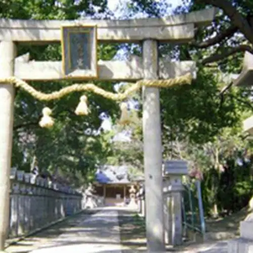
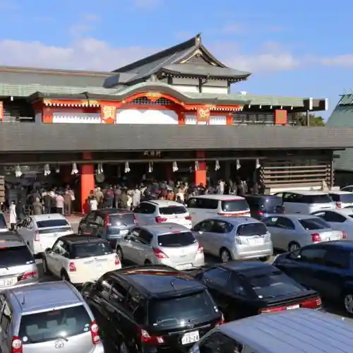
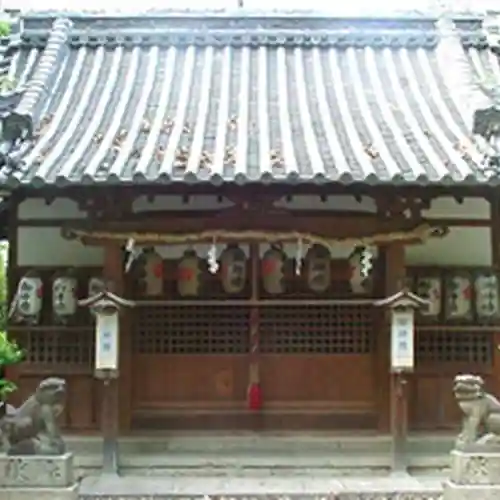

Japan / Osaka / Neyagawa
Neyagawa · Osaka
Neyagawa
Highlighted on the Osaka map.

Neyagawa City Hall
Keihan Denkitetsudo Neyagawa Sharyo Kojo
Neyagawa, Osaka · 072-823-6161
Niwa Tera Shi Shrine
Neyagawa, Osaka
Ne Ya Tourist Farm
Neyagawa, Osaka · 072-821-0158
Narita Yama Fudo Mikoto
Neyagawa, Osaka · 072-833-8881

Kanda Tenmangu Shrine
Neyagawa, Osaka · 072-827-4640

Kaya Shima Shrine
Nearby in Osaka: ← Moriguchi · Nose →
Other towns: Chihayaakasaka · Daito · Fujiidera · Habikino · Hannan · Higashiosaka · Hirakata · Ibaraki · Ikeda · Izumi · Izumiotsu · Izumisano · Kadoma · Kaizuka · Kanan · Kashiwara · Katano · Kawachinagano · Kishiwada · Kumatori · Matsubara · Minoh · Misakicho · Moriguchi · Nose · Osaka · Osakasayama · Sakai · Sennan · Settsu · Shijonawate · Shimamoto · Suita · Tadaoka · Taishicho · Tajiri · Takaishi · Takatsuki · Tondabayashi · Toyonaka · Toyono · Yao
All towns in Osaka · Back to all prefectures